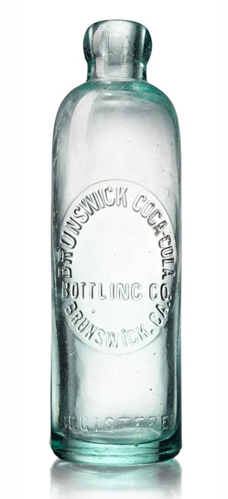
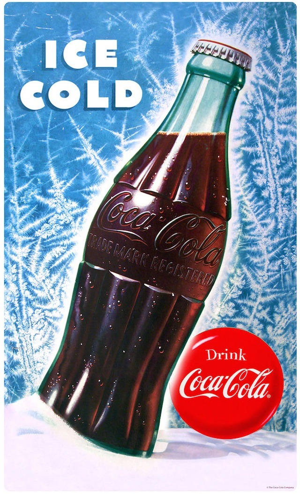

+++
title = "İkonik Tasarımlar: Coca-Cola Şişesi"
seotitle="Coca-Cola Şişesi Tasarım Hikayesi ve Tarihi"
description="Dünyada en fazla tanınan formlardan birisi Coca Cola şişesinin formudur. Elinize aldığınızda dahi tanıyabildiğimiz şişenin tasarım hikayesini okuyabilirsiniz."
url="sayi-10/coca-cola-sise-tasarimi"
aciklama="Dünyada en fazla tanınan formlardan birisi Coca Cola şişesinin formudur. Bu kola şişesini karanlıkta elimize aldığımızda veya şişenin kırık bir parçasına baktığımızda onun hangi ürüne ait olduğunu tanıyabiliyoruz."
type="sayfa"
thumb="/img/coca-cola-bottle-evolution-cover.jpg"
date = "2021-06-04"
sayi=["10"]
sayfa="03"
yazar=["zeynep dag"]
tags= ["ana sayfa", "dergi", "ikonik"]
+++

<div class="container">
   <div class="row">
      <div class="col-md-6">
         <p>
            Dünyada en fazla tanınan formlardan birisi Coca Cola şişesinin
            formudur. Bu kola şişesini karanlıkta elimize aldığımızda veya
            şişenin kırık bir parçasına baktığımızda onun hangi ürüne ait
            olduğunu tanıyabiliyoruz.
         </p>
         <p>
            <strong>Esra Gülmen</strong>&#39;in bu eserinde bize hissettirdiği
            gibi. Sadece logonun şekli deforme edilerek konulmuş bu eserde,
            gözümüz şişeyi tamamlıyor.
         </p>
         <p>
            Nitekim şirketin amacı da buydu.
            <em
               >“Coca Cola’yı öyle bir ambalajda satalım ki insanlar karanlıkta
               ellerine aldıklarında ya da şişe kırıldığında bile bunun bir Coca
               Cola şişesi olduğunu fark etsinler.”</em
            >
            İşte bu iddialı sözler yüzyıla ikon olarak damgasını vuracak bu
            ikonik &#39;Coca Cola Kontur&#39; şişesinin tasarımını sağlayacaktı.
         </p>
      </div>
      <div class="col-md-6">
         {{}}
         <small>Esra Gülmen, Coca-Cola - Icon of the Century, 2015</small>
      </div>
   </div>

   <h2 id="coca-colanın-şişelenme-hikayesi">
      Coca Cola&#39;nın Şişelenme Hikayesi
   </h2>
   <div class="row">
      <div class="col-md-3">
         {{}}
         <small>Hutchison Şişesi</small>
      </div>
      <div class="col-md-6">
         <p>
            1886 yılında eczanelerde çeşme formunda bardaklarla satılmaya
            başlanan kola. 13 yıl sonra iki Chattannoga&#39;lı avukat, Joseph
            Whitehead ve Benjamin Thomas, tarafından içeceğin şişeleme haklarını
            almak istediler. O dönem kolayı dışarıda tüketilmek üzere
            şişeleyerek kolanın popülaritesinden yararlanmak istediler.
         </p>
         <p>
            İlk olarak 1899 yılında metal tıpalı düz kenarlı bir
            <em>Hutchison şişesi</em>nde dükkanlardan satın alınabilir hale
            geldi.
         </p>
         <p>
            Daha sonra 1906 yılında kabartma logolu renkli
            <em>amber şişeleri</em>ne geçiş yapıldı. Şişeler tipik olarak
            kahverengi veya şeffaf olan düz kenarlı şişelerdi. Coca Cola
            Şirketi, şişeleyicilerinden ünlü Coca Cola logosunu her şişeye
            kabartmasını istedi. Bununla birlikte Koka-Nola, Ma Coca-Co,
            Toka-Cola ve Koke gibi rakip markalar da Spencerian el yazısı
            fontunu kopyalayarak tüketiciler arasında kafa karışıklığına yol
            açtılar. Her ne kadar The Coca Cola Company rakipleri arasından
            sıyrılmak için renkli ticari markaya ait bir etiket çıkarıp
            farklılaşmaya çalışsa da, buz gibi soğuk su fıçılarından satılan
            şişeler, etiketlerin soyulmasına neden oluyordu. Zaten rakipler
            etiketi de taklit etmişlerdi!
         </p>
      </div>
      <div class="col-md-3">
         {{}}
         <small>Amber Şişesi</small>
      </div>
   </div>
   <div class="row">
      <div class="col-md-6 offset-md-3">
         
      </div>
   </div>

   <h2 id="coca-cola-kontur-şişesi">Coca Cola Kontur Şişesi</h2>
   <p>
      Klasik kontur şişesinin ikonik görünümüyle tanınan Coca Cola Company.
      Başlangıçta diğer alkolsüz içecekler gibi şişelenmiş olan Coca Cola
      içeceğinin taklitçilerinden ve rekabetten sıyrılmasına yardımcı olacak
      özel bir kaba ihtiyaçlarının olduğunu fark etmişti. Bunun üzerine Coca
      Cola Company &#39;&#39;ayıt edici bir ambalaj&#39;&#39; çalışması için iyi
      bir ödenek oluşturup, ABD genelinde bir çok cam şirketinin katıldığı bir
      ulusal yarışma başlattı.
   </p>
   <div class="row">
      <div class="col-md-6">
         {{}}
      </div>
      <div class="col-md-6">
         <p>
            <strong>Root Glass Şirketi</strong>, briefi aldı ve tasarımları
            üzerinde çalışmaya başladı. Root ekibi <strong>C.J</strong> ve
            <strong>William Root</strong>, <strong>Alexander Samuelson</strong>,
            <strong>Earl Dean</strong> ve <strong>Clyde Edwards</strong>&#39;tan
            oluşuyordu. Hikayeye göre ekip üyelerinin tasarım olanaklarını
            araştırmak için gittikleri yerel bir kütüphanede,
            <em>&#39;&#39;koka&#39;&#39;</em> kelimesini sözlükte ararken
            tesadüfen <em>&#39;&#39;kakao&#39;&#39;</em> kelimesini bulmuşlardı
            ve kakao çekirdeğinin uzun belirgin kaburgalara sahip formundan
            etkilenip onun üzerinden gitmişlerdi.
         </p>
         <p>
            Yarışma sonunda <strong>Root</strong> versiyonu açık ara kazanan
            şişe olmuştu. Coca Cola sözcüsü Quartz,
            <em
               >“Coca-Cola&#39;nın kakao ile hiçbir ilgisi olmadığını
               biliyorlardı, ancak kakao kabuğunun çekici bir şekle sahip
               olduğunu hissettiler”</em
            >
            dedi.
         </p>
      </div>
   </div>

   <p>
      <strong>Dean</strong> şişenin tasarımını çizdi ve sadece 24 saat içinde
      kalıplanması onaylandı. Bir prototip yapıldı ve şişe Kasım 1915&#39;te bir
      patent aldı. Prototip aslında hiçbir zaman üretime geçmedi çünkü orta çapı
      tabanından daha büyüktü, bu da onu konveyör bantlarında dengesiz hale
      getiriyordu. <strong>Dean</strong> bu sorunu şişenin orta çapını
      küçülterek çözdü ve bugünkü kontur şekli doğdu.
   </p>
   <div class="row">
      <div class="col-md-6">
         {{}}
      </div>
      <div class="col-md-6">
         {{}}
      </div>
   </div>

   <p>
      Şişeye ait <em>&#39;kontur&#39;</em> referansı, Coca-Cola şişesini
      belirgin bir kontur şekliyle tanımlayan 1925 Fransız Dergisi La
      Monde&#39;da gerçekleşti. Genel halk için şekil sadece
      <em>&#39;Kola şişesi&#39;</em> dir.
   </p>
   <p>
      Coca Cola&#39;nın kontur şişesi yıllar boyunca değişikliklere uğramaya
      devam etti ama kakao çekirdeğinden ilham alınan form her yeni şişesinde
      devam etti ve tüm dünyanın bildiği ikonik bir form haline geldi.
   </p>
   <p class="text-center">
      {{}}
   </p>

   <h2 id="coca-colanın-kültürel-etkisi">Coca Cola&#39;nın Kültürel Etkisi</h2>
   <div class="row">
      <div class="col-md-6">
         {{}}<small>Andy Warhol, Green Coca-Cola Bottles, 1962</small>
      </div>
      <div class="col-md-6">
         <p>
            Yapılan araştırmalara göre dünyada en çok kullanılan kelimelerden
            biri Coca Cola‘ dır. Coca Cola sadece kendini bir içecek olarak
            konumlandırmamış ayrıca baskın bir kültürün diğerleri üzerindeki
            etkisini de anlatmıştır.
         </p>
         <p>
            Sanatında günlük hayattan yola çıkan <strong>Andy Warhol</strong>,
            modern resimlerinin bir çoğunda Coca-Cola orijinal şişeye yer
            vermiştir. <em>“Yeşil Coca-Cola Şişeleri”</em> eseri şuanda New
            York&#39;taki The Whitney Museum of American Art Müzesinde
            sergilenen bir koleksiyonun parçasıdır.
         </p>
         <p>
            <strong>Warhol</strong>&#39;un 1975 tarihli Andy Warhol Felsefesi
            kitabından yaptığı alıntı, sanatçının kitle kültürünü temsil edecek
            şişe seçimini özetliyor.
         </p>
         <p>
            <em
               >&quot;Bu ülke hakkında harika olan şey, Amerika&#39;nın en
               zengin tüketicilerin en fakirlerle aynı şeyleri satın alma
               geleneğini başlatması. Televizyon seyrediyor ve Coca-Cola&#39;yı
               izliyor olabilirsiniz ve biliyorsunuz ki başkan kola içiyor, Liz
               Taylor kola içiyor, ve sadece düşün, sen de kola içebilirsin.
               Kola koladır ve hiçbir para sana köşedeki serserinin içtiğinden
               daha iyi kola sağlayamaz. Bütün kolalar aynıdır ve kolaların
               hepsi iyidir. Liz Taylor biliyor, başkan biliyor, serseri biliyor
               ve siz de biliyorsunuz.&quot;</em
            >
         </p>
      </div>
   </div>

   <div class="row">
      <div class="col-md-4">
         <p>
            Şişeyi bir tabloya dahil eden ilk popüler sanatçı, 1943 tarihli
            <em>&#39;Poetry of America&#39;</em> adlı eserinde bir şişeye yer
            veren <strong>Salvadore Dali</strong>&#39;dir.
         </p>
         {{}}<small>Salvadore Dali, Poetry of America, 1943</small>
      </div>
      <div class="col-md-4">
         <p>
            1950’de Time Dergisi’nin kapağında yer alan ilk hızlı tüketim ürünü
            oldu.
         </p>
         {{}}
         <small>Time Dergisi, 1950</small>
      </div>
      <div class="col-md-4">
         <p>
            Karanlıkta ve kırıldığında bile anlaşılan Coca Cola şişesi dünyanın
            farklı bölgelerinde, çok kalın merceklerin kullanıldığı gözlükler
            Coca Cola şişesinden esinlenilerek şişe dibi gözlükler olarak
            anılıyor.
         </p>
         {{}}
      </div>
   </div>
   <div class="text-center">
<blockquote><p><strong>LÜTFEN SOĞUK İÇİNİZ!</strong></p></blockquote>
</div>

<button
class="btn markutbtn"
data-target="#my-collapse"
data-toggle="collapse"
aria-expanded="false"
aria-controls="my-collapse"
>
Kaynaklar
</button>
<div id="my-collapse" class="collapse">
<pre> <small><code>  
   https://www.coca-colacompany.com/company/history/the-history-of-the-coca-cola-contour-bottle

   https://en.wikipedia.org/wiki/Spencerian_script
   
   https://www.coca-colacompany.com/faqs/how-did-the-coke-bottle-get-its-shape
   
   https://qz.com/551682/the-coke-bottles-iconic-design-happened-by-sheer-chance/
   
   https://www.businessinsider.com/the-story-behind-coca-cola-iconic-coke-bottle-2015-6
   
   https://thedieline.com/blog/2009/11/17/the-evolution-of-the-coca-cola-contour-bottle.html?
   
   https://blog.retroplanet.com/iconic-coca-cola-contour-bottle-100th-anniversary/
   
   https://www.thepackagingcompany.us/knowledge-sharing/iconic-packaging-coca-cola/
   
   https://en.wikipedia.org/wiki/Coca-Cola
   
   https://www.themagger.com/hayraniyiz-coca-cola-tasarimlari/
   
   https://t24.com.tr/haber/coca-cola-nin-1915-ten-kalma-ikonik-sisesi-acik-artirmaya-cikiyor,814527
   
   https://besteonkol.wordpress.com/2011/08/27/bir-sisenin-anlattiklari/
   
   https://whitney.org/collection/works/3253
   
   https://en.wikipedia.org/wiki/Green_Coca-Cola_Bottles
   
   http://esragulmen.com/pier
   
  </code></small></pre>
</div>

</div>
